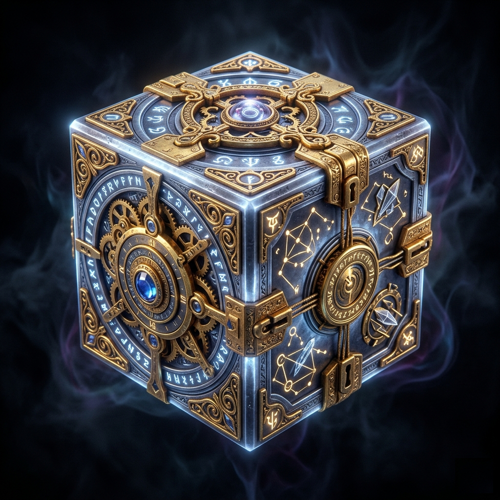

An Interactive Graphic Novel
Vandoras
For twenty years, Van made things work.
Then a family lockbox recognized him.
Now everything else wants to.
Van has made his living as a freelance tinkerer for twenty years. He's the person people call when a mechanism shouldn't work and needs to anyway. His reputation: unnaturally reliable. He always attributed it to skill.
When his father passed him an old family heirloom — a tarnished metal cube covered in geometric patterns — it sat on a shelf for years. Then one evening, the lockbox's tumblers responded differently under Van's hands. Springs compressed in ways that violated their apparent tension. The mechanism didn't surrender. It recognized him.
The box was empty. Because Van was the contents. Seven generations of latent power, compressed into a single instantaneous knowing — and now three factions who have been watching the Vandoras bloodline for exactly this event have come calling.
Van needs answers. The watchers want him classified. His power grows by engaging with the world's disorder. And standing still means letting unknown powers define his fate.
Three languages. One vocabulary.
01
Lock Tumbler
Van's oldest vocabulary. Tap, drag, set. But these pins have learned to resist — and the mechanism he's working knows who's asking.
Tap · Drag · Tension02
Gear Train
Ratios, flows, configurations. Not every gear belongs in every arrangement. Find the routing that holds — and understand what it means when one doesn't.
Rotate · Connect · Configure03
Symbol Alignment
The heaviest language. Sixteen glyphs, relational constraints, one valid configuration. You don't always know which answer you're giving until the frame closes.
Glyphs · Constraints · OrderThe story you play.
The Awakening
A routine commission. A lockbox that responds differently than it should. Van opens something he can't close. Three factions arrive — each with a different story about what he is and what he owes them.
Ch 1–3 · Harrowmere · Tutorial PuzzlesThe Reckoning
Six chapters across failing mines, besieged keeps, and Concordance archives. Van helps people whose problems resist conventional solutions — and learns that his gift has been tracked for seven generations. At the end, he chooses.
Ch 4–9 · Six Locations · Faction ChoicesThe Consequence
Three separate stories. Three distinct endings. One shared crisis at Vael Moren — an ancient stability node failing on its own schedule — before the tracks diverge into conclusions that don't resemble each other.
Ch 10–12 · Three Tracks · Three EndingsYour choices are Van's choices.
Vandoras has no single ending. The factions you favor, the answers you give, and the configuration you choose at Chapter 9's workbench commit you to one of three distinct conclusions — each with its own playtime, its own final puzzles, and its own reckoning.
The Keeper
Accept the seat.
Cosmic order has a vacancy. The Vandoras bloodline has always been the caretaker. Van is the first viable candidate in seven generations. Accept what the mechanism requires — and become the regulator it's been waiting for.
Duty · Precision · The Long WorkThe Artisan
Decline. Mean it.
Walk back into the smaller life. Reopen the workshop. Take the commission for the cart latch. Van's gift remains — he simply chooses not to exercise it at scale. The world's machinery will turn without him. That has to be enough.
Choice · Humility · The YearsThe Unwinder
Break the mechanism.
The mechanism should not exist. Neither should the vacancy. Concordance rations order, Ledger monetizes it — both assume it's a good worth rationing. Earn the mastery required to dismantle what can't be broken quietly. Understand the cost.
Defiance · Mastery · The Cascade"You don't build machines that work.— The Lockbox, Chapter 1
You impose order on chaos.
You are the gear that turns the cosmic clockwork."
Coming to iOS.
An interactive graphic novel for readers who want the story to have consequences.